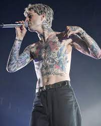

jesse rutherford
Jesse James Rutherford (nascido em 21 de agosto de 1991) é um ator e cantor americano, mais conhecido como o vocalista da banda de indie rock The Neighbourhood. Sua carreira musical com THE NBHD
começou em 2012 com sua primeira canção "Female Robbery", que foi seguido por "Sweather Weather"

Seu primeiro projeto solo foi lançado em 2011 com uma mixtape chamada "Truth Hurts, Truth Heals". Rutherford combina influências de hip-hop e R&B para criar o álbum de 17 canções. No mesmo ano, Rutherford estava se conectando com outros músicos locais quando surgiu a ideia de formar uma nova banda. O grupo pop de mistura de gêneros The Neighborhood foi criado logo depois, apresentando uma mistura de indie rock atmosférico , música eletrônica e batidas de hip-hop com vocais
melódicos influenciados pelo R&B . Em 2012, a banda lançou sua primeira música " Female Robbery " que foi seguida por "Sweater Weather " fora de primeiro álbum estúdio " Love You . _
